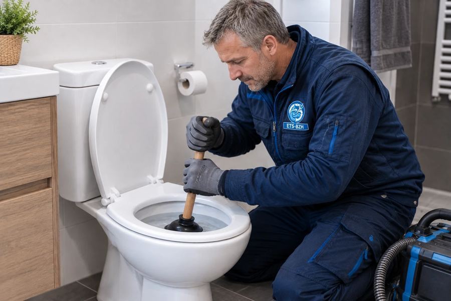
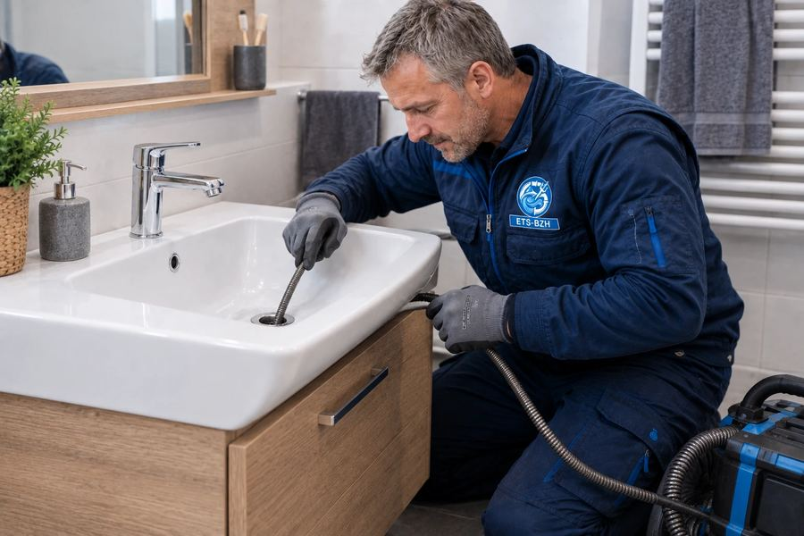
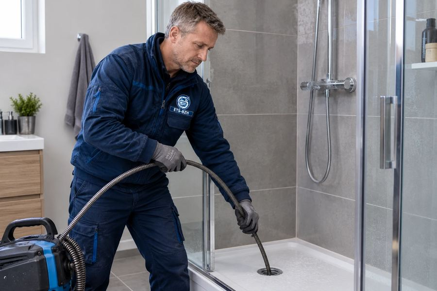
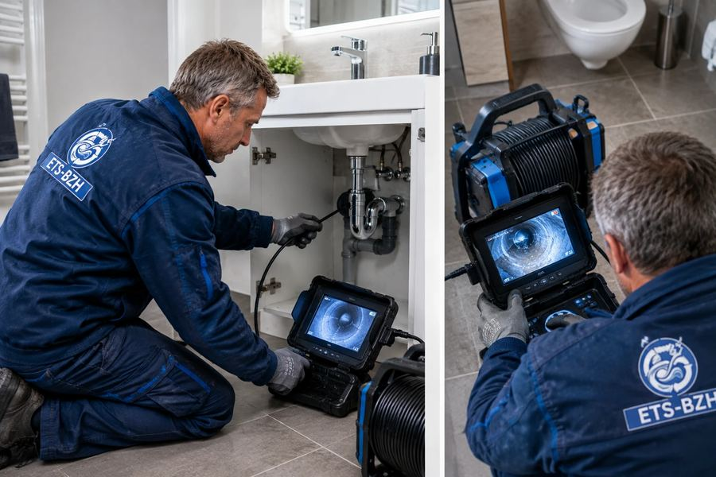
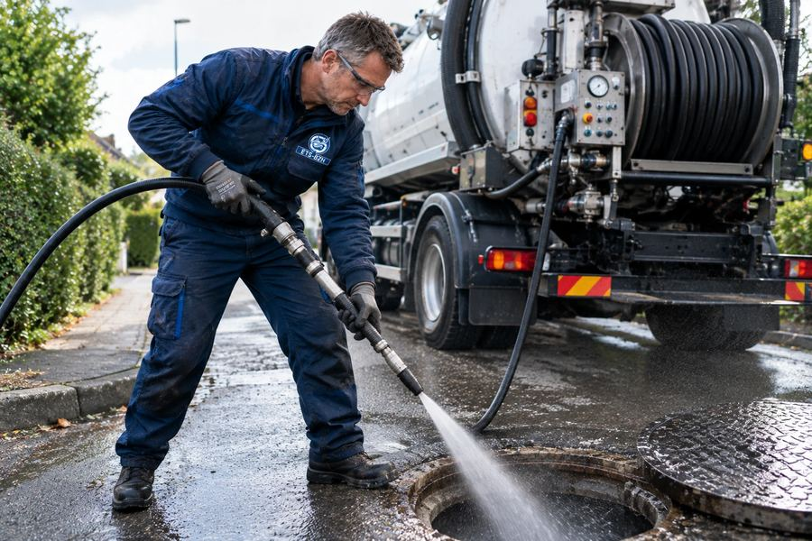
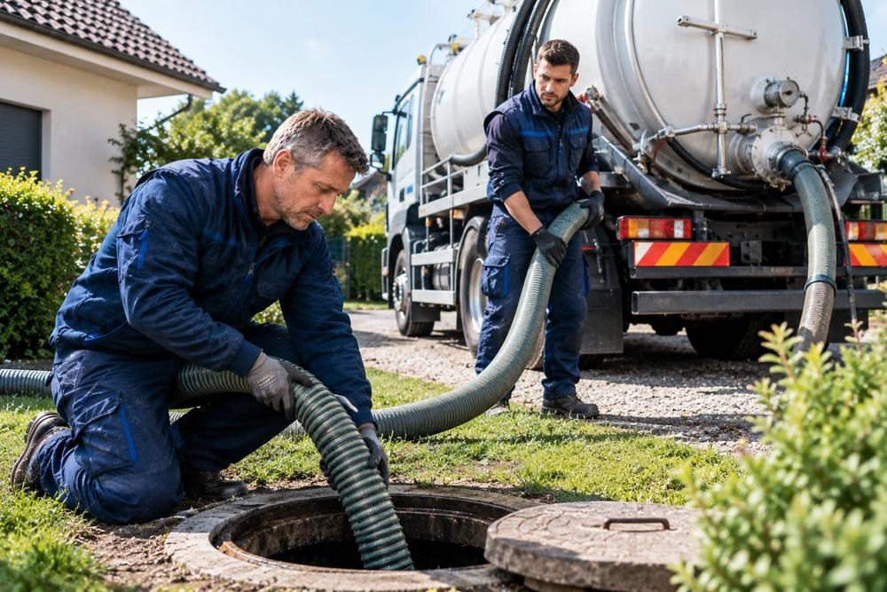
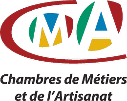

01
Débouchage WC, éviers et douches
Furet électrique ou pompe haute pression selon le type de bouchon et la nature du réseau.
Interventions rapides 7j/7 — techniciens qualifiés à votre service en Ille-et-Vilaine. Canalisation bouchée, WC qui refoule, évacuation qui déborde ? Nos camions hydrocureurs interviennent en urgence, 7j/7.
Nous intervenons : Rennes, Saint-Malo, Fougères, Vitré, Cesson-Sévigné, Bruz, Redon, Dinard et toutes les communes d'Ille-et-Vilaine.
Un technicien d'Ille-et-Vilaine vous rappelle sous 30 minutes ouvrées.
Du dépannage d'urgence au chantier planifié, nos techniciens assainissement interviennent sur l'ensemble d'Ille-et-Vilaine, particuliers comme professionnels.
Furet électrique ou pompe haute pression selon le type de bouchon et la nature du réseau.
Curage complet des canalisations jusqu'à 200 bars pour éliminer graisses, tartre et racines.
Diagnostic précis de l'état du réseau, localisation exacte du bouchon ou de la casse, rapport remis.
Intervention sur chutes d'eaux usées et colonnes collectives pour syndics et copropriétés.
Pompage, nettoyage et contrôle du bon fonctionnement, avec bordereau d'élimination des déchets.
Entretien périodique pour restaurants, cantines et collectivités, avec contrat possible.
Évacuation des eaux après un refoulement ou de fortes pluies, remise en état du regard.
Localisation de canalisation enterrée, regard introuvable, plan de réseau et préconisations.
Ces situations ne peuvent pas attendre. Appelez-nous immédiatement : un technicien vous répond, qualifie le problème et se met en route.
Nos équipes sont basées en Bretagne et circulent quotidiennement sur la rocade rennaise et la N137 vers Saint-Malo. Cela nous permet d'annoncer un délai réaliste dès votre appel — et de le tenir.
Une entreprise bretonne, des techniciens salariés qui connaissent le terrain, et des engagements écrits sur chaque intervention.
Astreinte réelle nuits, week-ends et jours fériés. Un interlocuteur au bout du fil, pas un répondeur, et un délai annoncé dès l'appel.
Diagnostic et chiffrage offerts. Le prix est validé avec vous avant de commencer : la facture ne dépasse jamais le devis accepté.
Des professionnels du métier, formés et équipés, qui interviennent en Bretagne toute l'année. Pas de sous-traitance improvisée.
Responsabilité civile professionnelle et garantie décennale sur les travaux concernés. Vous êtes couvert, et nous assumons nos interventions.
Aucun prix caché. Ces montants sont des points de départ : le tarif exact est fixé après diagnostic et validé par vous avant toute intervention.
| Intervention | Tarif indicatif |
|---|---|
| Débouchage simple (WC, évier, douche) | à partir de 129 € TTC |
| Débouchage avec camion hydrocureur | à partir de 249 € TTC |
| Hydrocurage préventif de réseau | à partir de 290 € TTC |
| Inspection vidéo par caméra | à partir de 179 € TTC |
| Vidange de fosse septique (3 m³) | à partir de 280 € TTC |
| Majoration nuit, dimanche et jours fériés | sur devis validé avant intervention |
Quatre étapes, sans zone d'ombre : vous gardez la main à chaque instant.
Un technicien vous répond directement, qualifie la panne au téléphone et vous annonce un créneau réaliste ainsi qu'un ordre de prix.
Sur place, l'intervenant identifie la cause exacte du problème avec le matériel adapté, et vous l'explique simplement.
Le montant est présenté avant les travaux. Rien ne démarre sans votre accord : c'est vous qui décidez, sans pression.
Réparation réalisée, chantier nettoyé, fonctionnement vérifié devant vous, facture détaillée remise avec la garantie.
La proximité se mesure sur le terrain. Voici ce que disent nos clients d'Ille-et-Vilaine après une intervention.
« WC bouché un dimanche matin, technicien sur place en 50 minutes. Débouché et nettoyé proprement, prix exactement celui annoncé au téléphone. Rien à redire. »
« Colonne d'immeuble engorgée sur nos 6 logements. Hydrocurage complet et passage caméra avec rapport pour le syndic. Travail sérieux et parfaitement documenté. »
« Fosse septique à vider dans une maison familiale. Rendez-vous tenu, bordereau fourni, équipe agréable et soigneuse. Je les rappellerai pour l'entretien. »
Quelques chantiers réalisés par nos équipes. Photos de nos propres interventions — pas de banque d'images.

photos/degorgement-1.jpg

photos/degorgement-2.jpg

photos/degorgement-3.jpg

photos/degorgement-4.jpg

photos/degorgement-5.jpg

photos/degorgement-6.jpg
Nous couvrons l'ensemble du département 35, des grandes villes aux communes rurales. Votre commune n'est pas listée ? Appelez-nous, nous intervenons très probablement chez vous.
Une canalisation ne se bouche jamais du jour au lendemain. Les dépôts de graisse, de calcaire, de cheveux et de lingettes s'accumulent pendant des mois, réduisent le diamètre utile du tuyau, puis l'obstruent totalement au plus mauvais moment. En Ille-et-Vilaine, nos techniciens assainissement traitent chaque semaine des évacuations d'éviers saturées, des WC qui refoulent et des regards extérieurs débordants.
Le territoire a ses particularités : une forte densité d'appartements et de copropriétés sur Rennes métropole, des immeubles anciens intra-rocade et un bassin locatif qui impose des interventions rapides. Ces contraintes locales, nous les connaissons parce que nous intervenons sur le terrain tous les jours, de Rennes à Saint-Malo en passant par Fougères.
Notre méthode est toujours la même : identifier la cause avant d'agir. Un bouchon ponctuel se traite au furet en moins d'une heure. Un réseau encrassé demande un hydrocurage haute pression. Une canalisation affaissée ou percée nécessite une inspection caméra et un chiffrage de réparation. Vous repartez toujours avec un diagnostic clair, pas seulement avec un écoulement rétabli.
Appelez ETS-BZH maintenant : un professionnel qualifié vous répond, annonce un délai clair et se déplace avec le matériel adapté. Devis gratuit, tarif validé avant intervention, garantie décennale.
02 20 06 00 75Ligne directe · 24h/24 et 7j/7 · Devis gratuit sans engagement
Réponse sous 30 minutes ouvrées
